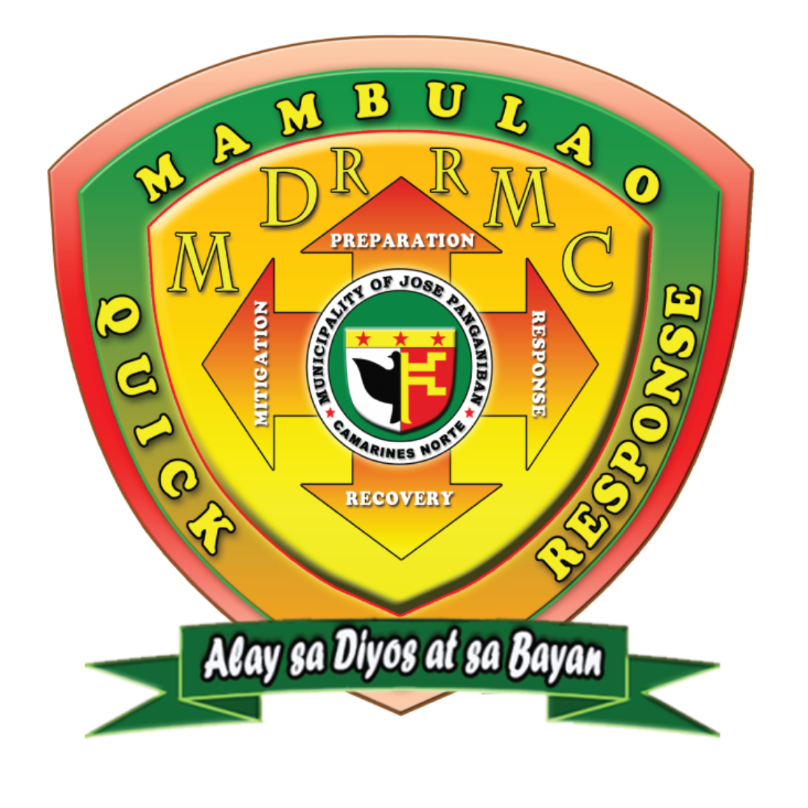

JOSE PANGANIBAN MUNICIPAL DISASTER RISK REDUCTION
AND MANAGEMENT OFFICE


Uphold the People’s Constitutional Rights to Life and Property, By Addressing the Root Causes of Vulnerabilities to Disasters, Strengthening the Institutional Capacity for DRRM and Building the Resilience of Community to Disasters, Including Climate Change Impacts.
Mambuleños ensured with the right to life and property in 2040
To establish a community with knowledge, skills, and awareness, prepared in meeting emergencies and climate change impacts, reducing its risk, responding effectively to save life, property, and balance the environment through a capable Municipal Disaster Risk Reduction and Management Council and Climate Change Adaptation Council, Partners, and Volunteers. All taking action to attain maximum security.
Effective Delivery of Disaster Risk Reduction and Management services in coordination with the different sectors and agencies
Functions:
a.) Organize and conduct training, orientation, and knowledge management activities on DRRM at the local level.
b.) Identify, assess and manage the hazards, vulnerabilities and risks that may occur in their locality.
c.) Identify and implement cost-effective risk reduction measures and or strategies.
d.) Disseminate information and raise public awareness about those hazards, vulnerabilities, and risks.
e.) Take all necessary steps on continuing basis to maintain, provide, or arrange the provision of, or to otherwise make available, suitably-trained and competent personnel for effective civil defense and DRRM in its area.
f.) Organize, train, equip and supervise the local emergency response teams and the accredited community disaster volunteers (ACDVs) ensuring that humanitarian aid workers are equipped with basic skills to assist mothers to breastfeed.
g.) Within its area, promote and raise public awareness of, and compliance with RA 10121 and legislative provisions relevant to the purpose of the latter.
h.) Implement policies, approve plans and programs of the LDRRMC consistent with the policies and guidelines laid down in RA 10121.
i.) Performs other related duties from time to time as directed by his/her superior.
Functions:
a.) Design, program, and coordinate DRRM activities, consistent with the NDRRMC’s standards and guidelines.
b.) Facilitate and support risk assessments and contingency planning activities at the local level.
c.) Consolidate local disaster risk information which includes natural hazards, vulnerabilities and climate change risks, and maintain a local risk map.
d.) Conduct research and development initiatives in DRRM.
e.) Formulate and implement a comprehensive and integrated Local DRRM plan (LDRRMP) in accordance with the national, regional, and provincial framework, and policies on DRR in close coordination with the Local Development Council (LDC).
f.) Prepare and submit to the Local Sanggunian through the Local LDRRMF Council and the LDC the annual LDRRMO Plan and Budget, the propose programming of the LDRRMF, other dedicated DRRM resources, and other regular funding source/s and budgetary support of the LDRRMO or BDRRMC.
g.) Maintain a database of human resource and their capacities, equipment, directories, and location of critical infrastructures such as hospitals and evacuation centers.
h.) Serve as the Secretariat and executive arm of the Local DRRM Council (LDRRMC).
i.) Recommend through the LDRRMC the enactment of local ordinances consistent with RA 10121.
j.) Prepare and submit, through the lDRRMC and the LDC, the report on the utilization of the LDRRMF and other dedicated DRRM resources to the local COA, copy furnished the regional director of the Office of Civil Defense (OCD) and the local government operations officer of the DILG.
k.) Involve the most vulnerable sectors (women, children, senior citizens, and PWD) in risk assessment and planning.
l.) Performs other related duties from time to time as directed by his/her superior.
Functions:
a.) Operate a multi-hazard warning system, linked to DRR to provide accurate and timely advice to national or local emergency response organizations and to general public, through diverse mass media, particularly radio, landline communications, and technologies for communication within rural communities.
b.) Conduct continuous disaster monitoring and mobilize instrumentalities and entities of the LGUs, CSOs, private groups and organized volunteers, to utilize their facilities and resources for the protection and preservation of life and properties during emergencies in accordance with existing policies and procedures.
c.) Respond to and manage the adverse effects of emergencies and carry out recovery activities in the affected area, ensuring that there is an efficient mechanism for immediate delivery of food, shelter and medical supplies for women and children, endeavor to create a special place where internally-displaced mothers can find help with breastfeeding, feed and care for their babies and give support to each other.
d.) Coordinate other DRRM activities.
e.) Establish linkage and or network with other LGUs for DRR and emergency response.
f.) Give early warning to the most vulnerable sectors (women, children, senior citizens, and PWD) to respond to their needs.
g.) Respond to and manage the adverse effects of emergency and carry out recovery activities to the most vulnerable areas specially to the vulnerable sectors (women, children, senior citizens and PWD).
h.) Perform other related duties from time to time as directed by his/her supervisor.